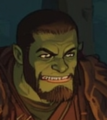

🗡 Grozzak "Grozz" Karfang / Half-Orc Fighter (Lvl 3)

🧾 Summary:
Once a mercenary, Grozz is now a warrior seeking a more honorable life. He stands out not for his strength but for his loyalty to friends. Ruthless on the battlefield, yet unexpectedly gentle at camp.
Role: Frontline Tank & Bruiser
🛡️ Abilities:
- Action Surge, Second Wind
- Heavy Weapons expertise (Greatsword)
- Skilled in Survival and Intimidation
🪓 Equipment:
- Heavy Greatsword (visible by the fire in the image)
- Dagger (sharpening it)
- Leather armor and shoulder guards, small shield on back
🎲 Hobbies:
- Sharpening weapons and sword collection
- Hunting deer
- Reading poetry (not aloud)
- Stargazing during camp watches
Note: "My sword is heavy, but my word is heavier. I stand on the front line; you just hide behind me."
© 2025 Fantasy Adventures - All Spells Reserved | Created by Umut Kurt